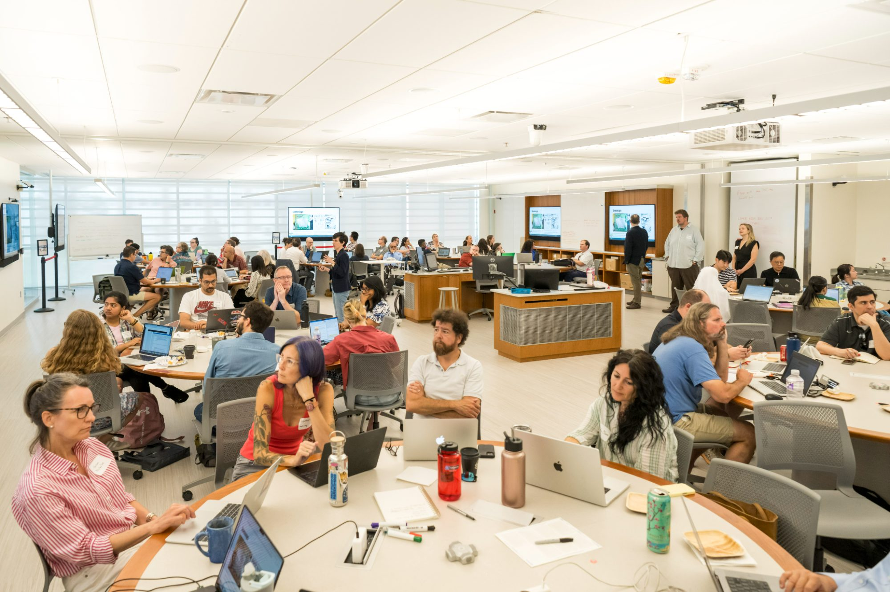

Six interactive activities for faculty who want to bring generative AI into the room — with skepticism and curiosity in equal measure. No detectors. No adversarial games. Just better conversations about how students read, write, and decide.

Most writing about AI in education treats it as a problem to manage. I'd rather we treat it as something to understand. AI literacy isn't fluency — it's demystifying how these tools work while being honest about what they cost us, and what they're doing to us.
Fifteen minutes a week isn't revolutionary. But it's possible for most of us — and that's the point.
These activities are small on purpose. They're built for the time you actually have: to start a conversation with students about agency and voice, and to let that conversation be a continuum — not a single policy line buried in a syllabus.
Each one is live and self-contained. Hover a card to preview it; click to open the full tool in a new tab.
Build a set of integrity badges that tell students exactly what's permitted on each assignment — with AI guidance mapped to the AI Assessment Scale, ready to paste straight into Blackboard.
Open the builder →Reading is where thinking slows down — and where AI quietly offers to speed it up. A tool for noticing the friction worth keeping, and naming the moments we're tempted to outsource.
Open the tracker →Seven pillars of ethical AI use, real scenarios, and a reflection journal students can export. A metacognitive framework built to interrupt the reflex to prompt.
Open the framework →Model the transparency we ask of students. Generate a clear, citable statement describing how and where AI was used — for a syllabus, an assignment, or your own scholarship.
Open the generator →Short, pointed scenarios designed to start the conversation that shapes how students see their own agency with AI. Drop one into class and let the disagreement do the teaching.
Open the scenarios →What we give up when we let AI decide. Branching scenarios that place you inside the trade-offs of AI-assisted grading — no right answers, only the questions worth carrying.
Open the dilemmas →Start with a scenario, not a slide. Surface disagreement in the first ten minutes — it's the fastest way to get people talking about their own choices.
Use: Provocative Scenarios · AI Grading Dilemmas
Slow the reflex to prompt. Use a metacognitive tool to notice where real understanding gets built — or quietly outsourced.
Use: Pause Before You Prompt · Reading Friction Tracker
Close by designing the assignment: name what's permitted, and model the disclosure you ask of your students.
Use: Academic Integrity Icons · AI Disclosure Generator
Pick one. A single activity, run well and discussed honestly, beats a semester of policy nobody reads.